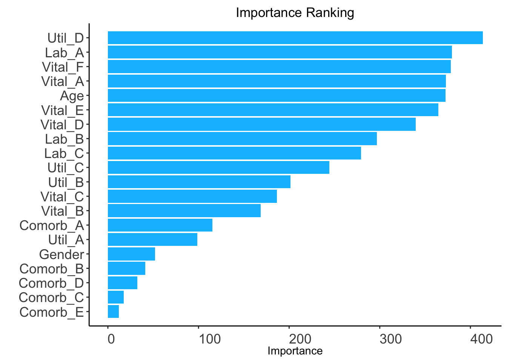
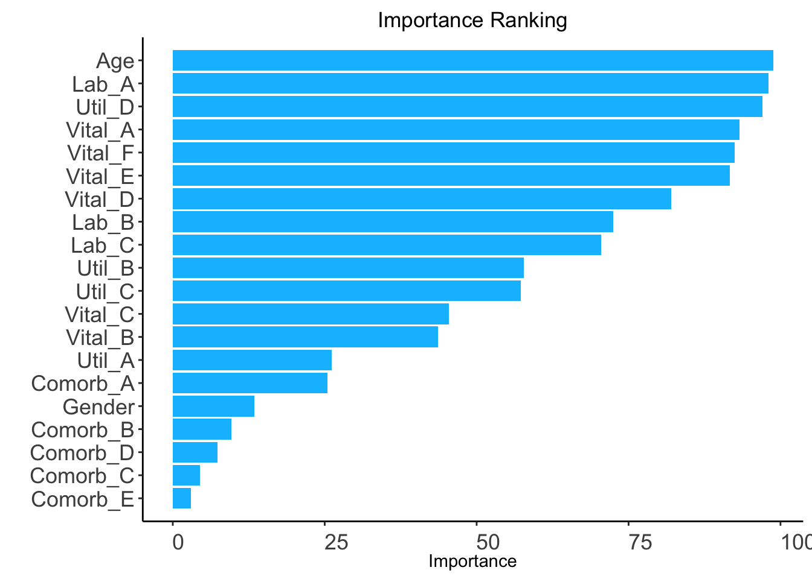
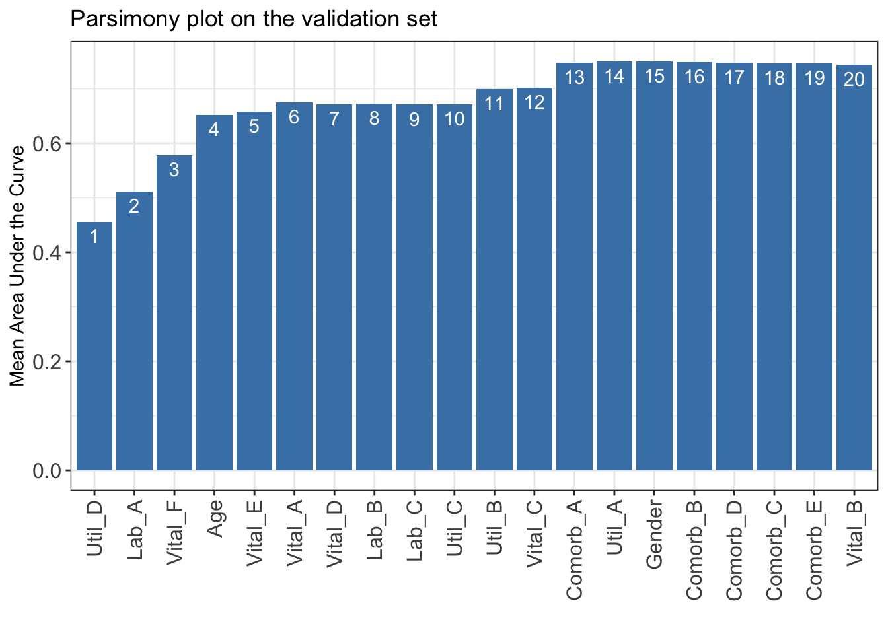

6AutoScore for ordinal outcomes (AutoScore-Ordinal)
AutoScore-Ordinal refers to the AutoScore framework for developing point-based scoring models for ordinal outcomes. Similar to the implementation described in Chapter 4 for binary outcomes, AutoScore-Ordinal is implemented by five functions: AutoScore_rank_Ordinal(), AutoScore_parsimony_Ordinal(), AutoScore_weighting_Ordinal(), AutoScore_fine_tuning_Ordinal() and AutoScore_testing_Ordinal().
In this chapter, we demonstrate the use of AutoScore-Ordinal to develop sparse risk scores for an ordinal outcome, adjust parameters to improve interpretability, assess the performance of the final model and map the score to predict risks for new data. To facilitate clinical applications, in the following sections we demonstrate AutoScore application in 3 demos with large and small datasets and with missing information.
Important
Scoring models below are based on simulated data to demonstrate AutoScore usage.
Variable names are intentionally masked to avoid misinterpretation and misuse.
In Demo 1, we demonstrate the use of AutoScore-Ordinal on a dataset with 20,000 observations using split-sample approach (i.e., to randomly divide the full dataset into training, validation and test sets) for model development.
Important
- Before proceeding, follow the steps in Chapter 2 to ensure all data requirements are met.- Refer to Chapter 3 for how to generate simple descriptive statistics before building prediction models.
Option 1: Prepare three separate datasets to train, validate, and test models.
Option 2: Use demo codes below to randomly split your dataset into training, validation, and test datasets (70%, 10%, 20%, respectively), possibly stratified by outcome categories (strat_by_label = TRUE) to ensure they are well represented in all three datasets.
The ranking based on variable importance was shown below for each variable:
Util_D Lab_A Vital_F Vital_A Age Vital_E Vital_D Lab_B
413.60631 379.51127 378.30195 372.84319 372.68880 364.51371 339.60643 296.86038
Lab_C Util_C Util_B Vital_C Vital_B Comorb_A Util_A Gender
279.47643 244.28653 201.34337 186.47331 168.45639 115.28191 98.78811 51.88705
Comorb_B Comorb_D Comorb_C Comorb_E
41.11154 32.31979 17.64803 11.87098

6.1.2 STEP(ii): select model with parsimony plot
AutoScore-Ordinal Modules 2+3+4
n_min: Minimum number of selected variables (Default: 1).
n_max: Maximum number of selected variables (Default: 20).
categorize: Methods for categorizing continuous variables. Options include "quantile" or "kmeans" (Default: "quantile").
quantiles: Predefined quantiles to convert continuous variables to categorical ones. (Default: c(0, 0.05, 0.2, 0.8, 0.95, 1)) Available if categorize = "quantile".
max_cluster: The maximum number of cluster (Default: 5). Available if categorize = "kmeans".
max_score: Maximum total score (Default: 100).
auc_lim_min: Minimum y_axis limit in the parsimony plot (Default: 0.5).
auc_lim_max: Maximum y_axis limit in the parsimony plot (Default: “adaptive”).
link: link function in the ordinal regression, which affects predictive performance. Options include "logit" (for proportional odds model), "cloglog" (for proportional hazard model) and "probit" (Default: "logit").
Important
Use the same link parameter throughout descriptive analysis and model building steps.
Select 1 variables: Mean area under the curve: 0.4555607
Select 2 variables: Mean area under the curve: 0.5110174
Select 3 variables: Mean area under the curve: 0.5780548
Select 4 variables: Mean area under the curve: 0.5912554
Select 5 variables: Mean area under the curve: 0.6685143
Select 6 variables: Mean area under the curve: 0.672106
Select 7 variables: Mean area under the curve: 0.6690071
Select 8 variables: Mean area under the curve: 0.6710102
Select 9 variables: Mean area under the curve: 0.6706072
Select 10 variables: Mean area under the curve: 0.6721932
Select 11 variables: Mean area under the curve: 0.7003498
Select 12 variables: Mean area under the curve: 0.6995013
Select 13 variables: Mean area under the curve: 0.6994186
Select 14 variables: Mean area under the curve: 0.7476355
Select 15 variables: Mean area under the curve: 0.7489346
Select 16 variables: Mean area under the curve: 0.7448716
Select 17 variables: Mean area under the curve: 0.744752
Select 18 variables: Mean area under the curve: 0.744752
Select 19 variables: Mean area under the curve: 0.745261
Select 20 variables: Mean area under the curve: 0.7472124
Note
Users could use mAUC for further analysis or export it to CSV to other software for plotting.
write.csv(data.frame(mAUC), file ="mAUC.csv")
Determine the optimal number of variables (num_var) based on the parsimony plot obtained in STEP(ii).
The final list of variables is the first num_var variables in the ranked list ranking obtained in STEP(i).
Optional: User can adjust the finally included variables final_variables based on the clinical preferences and knowledge.
# Example 1: Top 5 variables are selectednum_var <-5final_variables <-names(ranking[1:num_var])# Example 2: Top 14 variables are selectednum_var <-14final_variables <-names(ranking[1:num_var])# Example 3: Top 5 variables, the 11th and 14th variable are selectedfinal_variables <-names(ranking[c(1:5, 11, 14)])
6.1.3 STEP(iii): generate initial scores with final variables
Re-run AutoScore-Ordinal Modules 2+3
Generate cut_vec with current cutoffs of continuous variables, which can be fine-tuned in STEP(iv).
Performance of resulting scores is evaluated using the mean AUC across dichotomous classifications (mAUC), with 95% CI computed using bootstrap (Default: n_boot = 100 bootstrap samples). Setting n_boot = 1 disables bootstrap and reports mAUC without CI.
Run time increases with larger n_boot value. Code below uses n_boot = 10 for demonstration.
Revise cut_vec with domain knowledge to update the scoring table (AutoScore-Ordinal Module 5).
Re-run AutoScore-Ordinal Modules 2+3 to generate the updated scores.
Users can choose any cutoff values and/or any number of categories, but are suggested to choose numbers close to the automatically determined values.
## For example, we have current cutoffs of continuous variable: Age ## ============== =========== =====## variable interval point## ============== =========== =====## Age <27 0 ## [27,46) 4 ## [46,78) 14 ## [78,87) 18 ## >=87 21
Current cutoffs:c(27, 46, 78, 87). We can fine tune the cutoffs as follows:
# Example 1: rounding to a nice numbercut_vec$Age <-c(25, 45, 75, 85)# Example 2: changing cutoffs according to clinical knowledge or preference cut_vec$Age <-c(25, 50, 75, 85)# Example 3: combining categoriescut_vec$Age <-c(45, 75, 85)
mAUC and 95% bootstrap CI (Default: n_boot = 100 bootstrap samples) are reported after fine-tuning.
Run time increases with larger n_boot value. Code below uses n_boot = 10 for demonstration.
Given the proportion of subjects for each score value (see figure above), select reasonable score breaks (Default: 5, 10, 15, …, 70) to report the average predicted risk within each score interval, which can be used to predict risk for a new subject.
When selecting score breaks, avoid creating score intervals with too few observations.
conversion_table_ordinal(pred_score = pred_score, link = link,score_breaks =seq(from =5, to =70, by =5), digits =4)
Score
Predicted risk, category 1
Predicted risk, category 2
Predicted risk, category 3
[0,5]
0.9742
0.0192
0.0065
(5,10]
0.9617
0.0285
0.0098
(10,15]
0.9454
0.0404
0.0142
(15,20]
0.9226
0.0569
0.0205
(20,25]
0.8914
0.0791
0.0295
(25,30]
0.8497
0.1081
0.0423
(30,35]
0.7956
0.1441
0.0602
(35,40]
0.7284
0.1864
0.0851
(40,45]
0.6489
0.2321
0.1190
(45,50]
0.5602
0.2758
0.1640
(50,55]
0.4675
0.3109
0.2216
(55,60]
0.3769
0.3307
0.2924
(60,65]
0.2942
0.3309
0.3749
(65,70]
0.2231
0.3116
0.4653
(70,100]
0.0840
0.1718
0.7442
Note
Users could use pred_score for further analysis or export it to CSV to other software (e.g., generating the calibration curve).
write.csv(pred_score, file ="pred_score.csv")
6.2 Demo 2: small sample
In Demo 2, we demonstrate the use of AutoScore-Ordinal on a smaller dataset where there are no sufficient samples to form a separate training and validation dataset. Thus, the cross validation is employed to generate the parsimony plot.
Load small dataset with 5000 samples
data("sample_data_ordinal_small")
Prepare training and test datasets
Option 1: Prepare two separate datasets to train and test models.
Option 2: Use demo codes below to randomly split your dataset into training and test datasets (70% and 30%, respectively). For cross-validation, train_set is equal to validation_set and the ratio of validation_set should be 0. Then cross-validation will be implemented in the STEP(ii), AutoScore_parsimony_Ordinal().
The ranking based on variable importance was shown below for each variable:
Age Lab_A Util_D Vital_A Vital_F Vital_E Vital_D Lab_B
98.791839 98.073161 97.021662 93.282141 92.469166 91.677271 82.051893 72.462999
Lab_C Util_B Util_C Vital_C Vital_B Util_A Comorb_A Gender
70.507041 57.778464 57.270171 45.468903 43.633031 26.120379 25.414958 13.405373
Comorb_B Comorb_D Comorb_C Comorb_E
9.595971 7.320633 4.477519 2.993603

6.2.2 STEP(ii): select the best model with parsimony plot
AutoScore-Ordinal Modules 2+3+4
nmin: Minimum number of selected variables (Default: 1).
nmax: Maximum number of selected variables (Default: 20).
categorize: Methods for categorizing continuous variables. Options include "quantile" or "kmeans" (Default: "quantile").
quantiles: Predefined quantiles to convert continuous variables to categorical ones. (Default: c(0, 0.05, 0.2, 0.8, 0.95, 1)) Available if categorize = "quantile".
max_cluster: The maximum number of cluster (Default: 5). Available if categorize = "kmeans".
max_score: Maximum total score (Default: 100).
auc_lim_min: Minimum y_axis limit in the parsimony plot (Default: 0.5).
auc_lim_max: Maximum y_axis limit in the parsimony plot (Default: “adaptive”).
cross_validation: TRUE if cross-validation is needed, especially for small datasets.
fold: The number of folds used in cross validation (Default: 10). Available if cross_validation = TRUE.
do_trace: If set to TRUE, all results based on each fold of cross-validation would be printed out and plotted (Default: FALSE). Available if cross_validation = TRUE.
link: link function in the ordinal regression, which affects predictive performance. Options include "logit" (for proportional odds model), "cloglog" (for proportional hazard model) and "probit" (Default: "logit").
Important
Use the same link parameter throughout descriptive analysis and model building steps.
Users could use mAUC for further analysis or export it to CSV to other software for plotting.
write.csv(data.frame(mAUC), file ="mAUC.csv")
Determine the optimal number of variables (num_var) based on the parsimony plot obtained in STEP(ii).
The final list of variables is the first num_var variables in the ranked list ranking obtained in STEP(i).
Optional: User can adjust the finally included variables final_variables based on the clinical preferences and knowledge.
# Example 1: Top 6 variables are selectednum_var <-6final_variables <-names(ranking[1:num_var])# Example 2: Top 14 variables are selectednum_var <-14final_variables <-names(ranking[1:num_var])# Example 3: Top 3 variables, the 6th, 10th and 15th variable are selectedfinal_variables <-names(ranking[c(1:3, 6, 10, 15)])
6.2.3 STEP(iii): generate initial scores with final variables
Re-run AutoScore-Ordinal Modules 2+3
Generate cut_vec with current cutoffs of continuous variables, which can be fine-tuned in STEP(iv).
Performance of resulting scores is evaluated using the mean AUC across dichotomous classifications (mAUC), with 95% CI computed using bootstrap (Default: n_boot = 100 bootstrap samples). Setting n_boot = 1 disables bootstrap and reports mAUC without CI.
Revise cut_vec with domain knowledge to update the scoring table (AutoScore-Ordinal Module 5).
Re-run AutoScore-Ordinal Modules 2+3 to generate the updated scores.
Users can choose any cutoff values and/or any number of categories, but are suggested to choose numbers close to the automatically determined values.
## For example, we have current cutoffs of continuous variable: Age ## ============== =========== =====## variable interval point## ============== =========== =====## Age <27 0 ## [27,46) 4 ## [46,78) 14 ## [78,87) 18 ## >=87 21
Current cutoffs:c(27, 46, 78, 87). We can fine tune the cutoffs as follows:
# Example 1: rounding to a nice numbercut_vec$Age <-c(25, 45, 75, 85)# Example 2: changing cutoffs according to clinical knowledge or preference cut_vec$Age <-c(25, 50, 75, 85)# Example 3: combining categoriescut_vec$Age <-c(45, 75, 85)
mAUC and 95% bootstrap CI (Default: n_boot = 100 bootstrap samples) are reported after fine-tuning.
Run time increases with larger n_boot value. Code below uses n_boot = 10 for demonstration.
Users can also map score to risk using plot_predicted_risk() and conversion_table_ordinal(). Please refer to our demo for large sample (6.1.6) for detail.
6.3 Demo 3: data with missing values
In Demo 3, we demonstrate AutoScore-Ordinal for application to data with missing values in two variables (i.e., Lab_A and Vital_A).
SUGGESTED ACTION:
* Consider imputation and supply AutoScore with complete data.
* Alternatively, AutoScore can handle missing values as a separate 'Unknown' category, IF:
- you believe the missingness in your dataset is informative, AND
- missing is prevalent enough that you prefer to preserve them as NA rather than removing or doing imputation, AND
- missing is not too prevalent, which may make results unstable.
AutoScore can automatically treat the missingness as a new category named Unknown. The following steps are the same as those in Demo 1 (5.1).
Important
High missing rate may cause the variable ranking less reliable, and thus, caution is needed for variable selection using parsimony plot.
Select 1 variables: Mean area under the curve: 0.4555607
Select 2 variables: Mean area under the curve: 0.5634823
Select 3 variables: Mean area under the curve: 0.6431742
Select 4 variables: Mean area under the curve: 0.6458002
Select 5 variables: Mean area under the curve: 0.6463306
Select 6 variables: Mean area under the curve: 0.6491724
Select 7 variables: Mean area under the curve: 0.6504178
Select 8 variables: Mean area under the curve: 0.6519616
Select 9 variables: Mean area under the curve: 0.6496988
Select 10 variables: Mean area under the curve: 0.6608109
Select 11 variables: Mean area under the curve: 0.6922967
Select 12 variables: Mean area under the curve: 0.6916261
Select 13 variables: Mean area under the curve: 0.6902582
Select 14 variables: Mean area under the curve: 0.7399622
Select 15 variables: Mean area under the curve: 0.7401835
Select 16 variables: Mean area under the curve: 0.7395909
Select 17 variables: Mean area under the curve: 0.7405369
Select 18 variables: Mean area under the curve: 0.7405267
Select 19 variables: Mean area under the curve: 0.740007
Select 20 variables: Mean area under the curve: 0.7397616

Note
The Unknown category indicating the missingness will be displayed in the final scoring table.